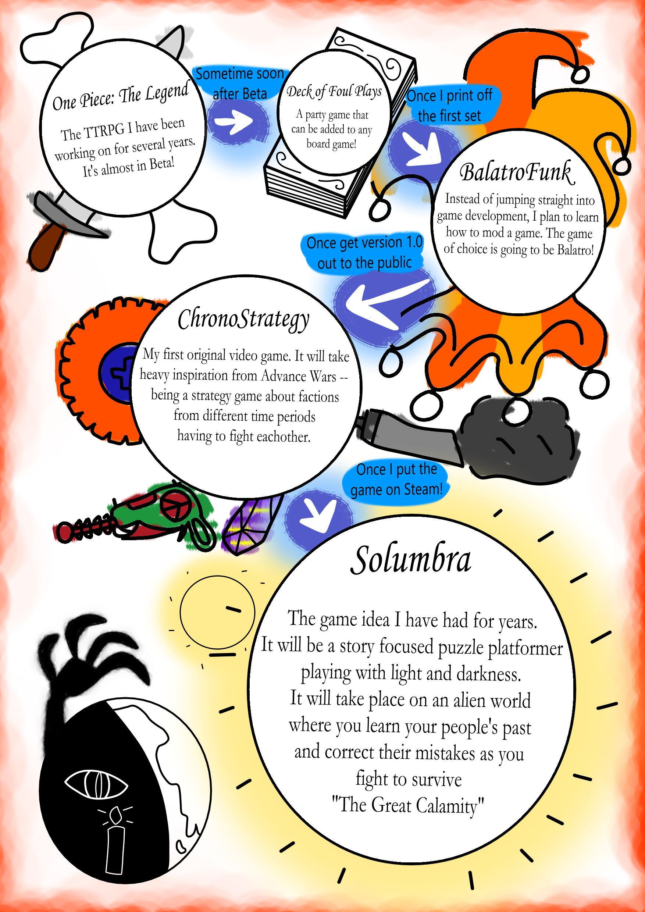

Welcome to this month's first Funk! After some thought, I have decided that I wanted to get a bit more personal and talk about my plans for the future. Particularly, my plan into the world of game development!
I have always loved games, but more specifically, a game's design. It is incredibly interesting to me how games manage to keep a player's attention. Some games do this through entertaining methods, and others through more... manipulative measures...
As someone who wants to make games as a hobby, my goal is to create games that I want to play! I'm not making something for anyone else; I am indie.
I'm not rushing into this blind, however. I have a plan, and it is this plan that I'm going to share with you! So here is my little INFOGRAPHIC so you can eat with your eyes!

For more information, check to the Games section of this website!